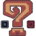

Loading...
Click to look around · WASD move · Q/E up/down · Shift fast · Esc frees the mouse
Some models may not render correctly at this time or some oddities may happen

Some models may not render correctly at this time or some oddities may happen
Companion fan tools by the same author. Each opens in a new tab.
Overrides the render background so the model can be keyed out.
A fan-made viewer for the armour of Monster Hunter 3 Ultimate, with the game's own models, textures and names. Not affiliated with, endorsed by, or supported by Capcom.
Monster Hunter 3 Ultimate and all of its models, textures, animations and data tables are © CAPCOM CO., LTD. All rights reserved. Every asset here was extracted from a personally owned copy of the game and is shown for reference only.
Each armour piece is its own model in the game, worn over the hunter's skeleton. The names, which model a piece draws for each gender, the clothing shown under an empty slot, and which parts of the hair and face a helm leaves visible all come from the game's own tables.
.mod meshes to glTF and .tex textures to DDS.The theme icons are the game's own monster icons. The UI textures and the MHFU font are shared with the same author's MHGU fan apps. Armour names come from the game's own text files.